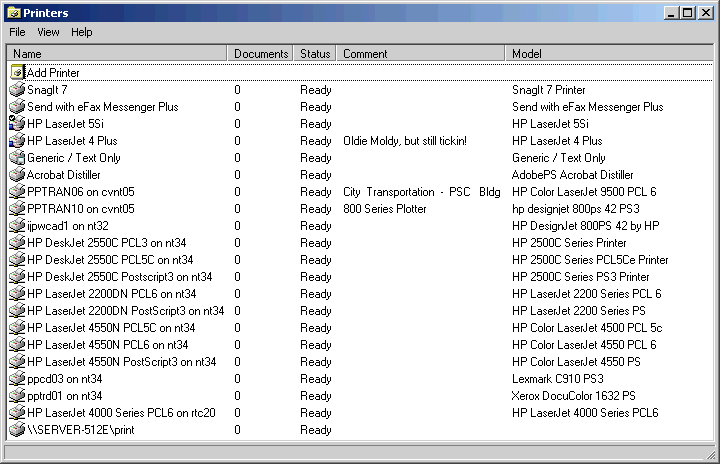

This sample tries to cover all the bases in regard to querying and
controlling printers within Windows. The underlying code is presented through a
user interface that closely mimics that found when you Open the Printers dialog:

Some of the features demonstrated in the accompanying UI include:
- enumerate installed printers,
- display all the standard printer properties including present status,
- fire up the "Add Printer" wizard,
- open any installed printer's Properties dialog,
- determine and set the system default printer,
- open another window to view the print queue of any printer,
- many more...
If you open the print queue window of any installed printer, you can directly
monitor the progress of all print jobs currently in the queue, and (provided you
have sufficient permissions) the ability to control those jobs by pausing,
resuming, reorder, or even deleting them. You can, with proper permission, pause
all printing as well.
The code behind the sample is extensive! Scroll down for a look at all the
APIs that are demonstrated. For the most part, this sample attempts to provide
information from the printer, and doesn't go very deep into the realm of setting
printer properties. The code is organized into a collection of hierarchical
object structures, one for each installed printer:
| CPrinterInfo |
==>> |
CDevMode |
| CPrinterJobs |
==>> |
CPrinterJobInfo (collection) |
CPrinterInfo is the base class, which is configured by assigning its
DeviceName property (see code below) to the name returned by the same property of any one of VB's
Printer objects. IsDefault is the only other read-write property of this class,
which may be used as the name implies. Retrieving or setting the systemwide
default printer is highly OS-specific. The minimum details are provided in the
Knowledge Base, but I think you'll like the implementation here a bit better as
it combines (in far better style <g>) the best of these articles:.
HOWTO: Set the Default Printer Programmatically in Windows 95, Windows 98, or Windows Me
http://support.microsoft.com/kb/q140560/
The CPrinterInfo class also demonstrates how to dereference a PRINTER_INFO_2
structure and its embedded DEVMODE structure, as they're returned from a
GetPrinter call. This can be a tedious process, as you need to dereference a
whole slew of string pointers. In fact, CPrinterInfo delegates the task of
capturing the DEVMODE data, by simply passing the pointer to a new instance of a
CDevMode class. CDevMode then does the dirty work of reconstructing this
information packed structure from memory.
CPrinterJobs offers the means to monitor any given printer's queue, after
assigning the desired DeviceName property. A collection of CPrinterJobInfo
classes are offered for query. Use CPrinterJobs to manage the queue itself.
CPrinterJobInfo exposes a wealth of information about each job, by effectively
wrapping up the contents of the JOB_INFO_2 structure. You can retrieve the
number of document name, user, page count, and many other interesting statistics
about each job through this class.
Bug in VB5 Printers Collection
Also included in the sample is a simple little demo that shows how to detect
and overcome a bug in VB5's Printers collection. As you're probably away,
installed printers may be discovered "universally" by querying the
PrinterPorts section of Win.ini. Well, you may also be aware that INI calls
won't actually fail, if you don't preallocate a buffer large enough to return
the complete results, but rather just obligingly fills what buffer was provided.
VB5 didn't test this condition, and expand the buffer in those cases where lots
of printers were installed.
If you're coding in VB5, and depend on a fully-populated Printers collection,
consider using the enclosed CPrinters class in place of the native offering. At
the least, you will know whether the native collection is hosed, using a simple
test like this:
 |
' Attempt to get list of installed printers
' by looping until successful.
Do
Buffer = Space$(BufSize)
nChars = GetProfileString("PrinterPorts", vbNullString, "", Buffer, BufSize)
If nChars = (BufSize - 2) Then
' MSDN: If either lpAppName or lpKeyName is NULL and
' the supplied destination buffer is too small to hold
' all the strings, the last string is truncated and
' followed by two null characters. In this case, the
' return value is equal to nSize minus two.
BufSize = BufSize * 2
ElseIf nChars = 0 Then
' The call failed entirely.
Exit Do
Else
' We got a reasonable return.
Exit Do
End If
Loop
' Build a fresh collection
Set m_prns = New Collection
Call ExtractStringZ(Buffer, Devices())
For i = LBound(Devices) To UBound(Devices)
Set inf = New CPrinterInfo
inf.DeviceName = Devices(i)
m_prns.Add inf, Devices(i)
RaiseEvent PrinterAdded(Devices(i))
Next i
' Set flag to indicate this system will
' choke if the Printers collection is
' queried from VB5.
m_VB5ErrorFlag = (nChars > (1024 - 2))
What won't this sample show you? Well, it doesn't let you choose which
tray your printer will use, or flop between portrait and landscape, or anything
else of that sort. This sample is designed mainly to retrieve information from
the Printers collection and its elements, and take minimal control over each
printer's print queue and associated jobs.